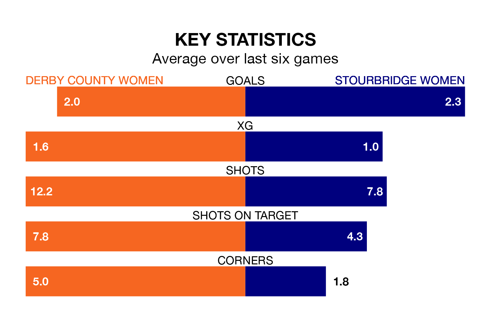

Stourbridge Women travel to Derby County Women on early Sunday in Women's National League Premier Division North.
The visitors come into the game on the back of a win in their last match, having beaten Fylde Women 2-1 at home.
Derby County also won their last match, 2-1 against Liverpool Feds.
With 24 goals in 11 games so far this season, Derby County are scoring more than average in the league with 2.2 goals per game. And they are conceding fewer than average, letting in 13 goals at a rate of 1.2 per game.
Stourbridge, meanwhile, are below average scorers, with 1.8 goals per game, compared to a league average of 1.9. They have conceded 3.1 goals per game.
The hosts are fifth in the table after 11 games, of which they have won five and drawn one, earning 16 points.
The away team are two places behind Derby County in seventh, with four wins and three draws putting them on 15 points.
Derby County are in mixed form in Women's National League Premier Division North, with three wins and a draw from their last six games.
And also with three wins and a draw over that period, Stourbridge's form is identical – they have both taken 10 points from 18.
Updated: 10:02 (UTC), 19/01/24